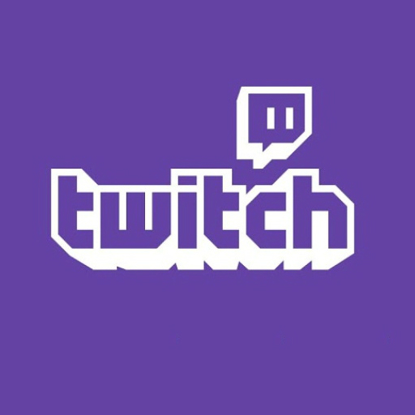

"Play together, stay together." - Twitch Motto
Twitch is a live streaming platform primarily focused on video game streaming, but also includes music, creative content, and real-life streams. Launched in 2011, Twitch has grown to become the leading platform for gamers and content creators to connect with their audience in real time.
Viewers can watch their favorite streamers live, interact through chat, and support creators through subscriptions and donations. Twitch also hosts esports competitions, charity events, and community gatherings.
The mission of Twitch is to empower creators to share their passions and connect with their audience through interactive and engaging live content.